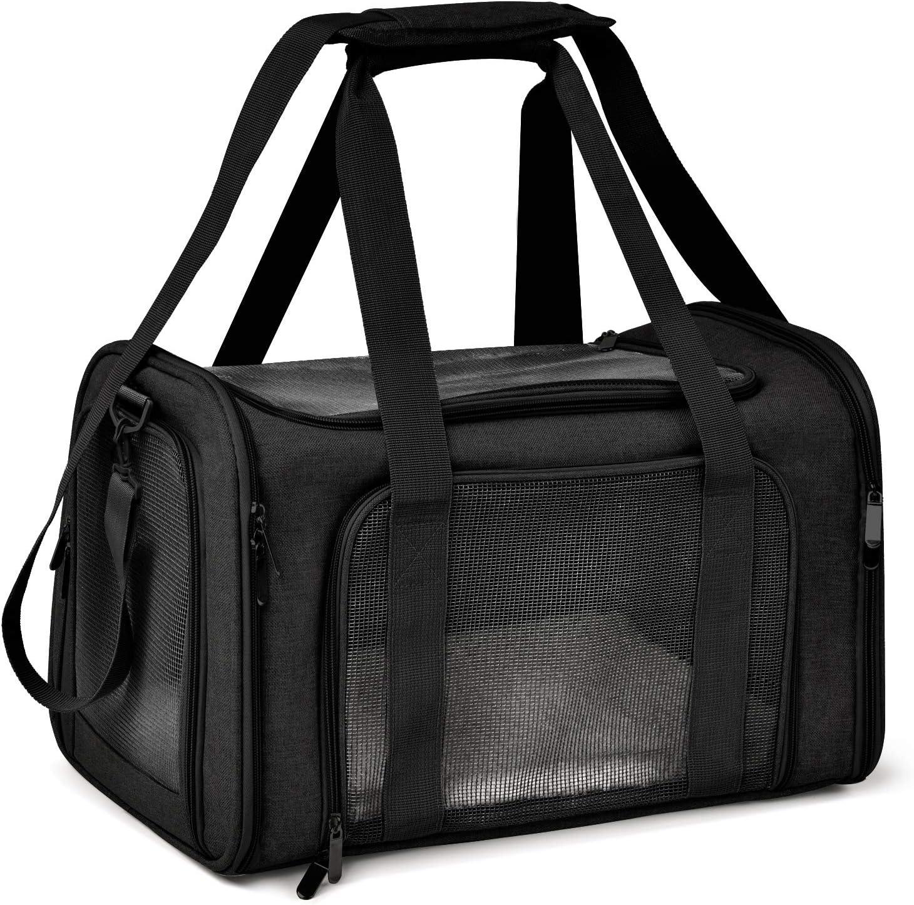
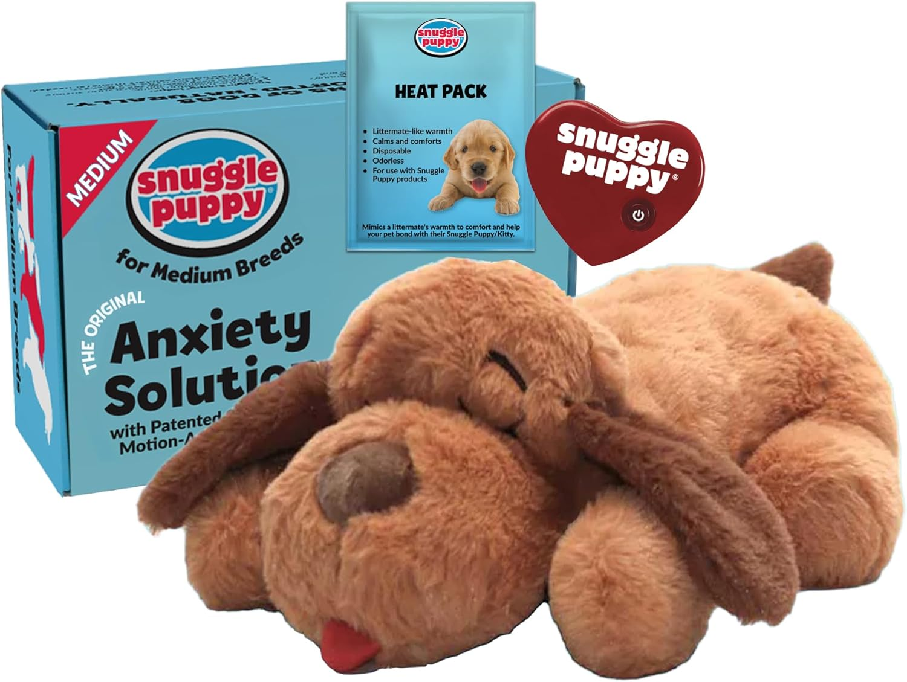

¿Por qué es indispensable? Un transportador homologado garantiza que tu mascota no sea rechazada. Este modelo permite ventilación óptima y cumple con las normas de seguridad internacionales.
🛒 Ver transportadoras más vendida
El secreto para su calma: Con tecnología de latido real y calor, este peluche recrea la compañía materna, ideal para reducir la ansiedad durante el despegue y aterrizaje.
🛒 Ver Snuggle Puppy en Amazon